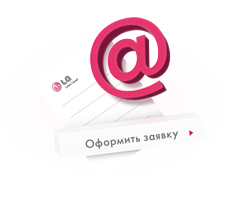
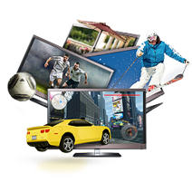
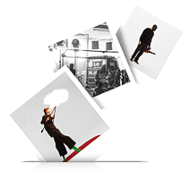

Зарегистрируйтесь на сайте www.lgcinema3D.ru (не забудьте указать свой адрес, возможно именно к вам приедет команда LG!).
Шаг 1.
Шаг 2.

Выберите один из четырех предложенных сюжетов телевизора LG Cinema 3D (Горные лыжи в 3D, Ужин в Париже 3D, Футбол в 3D, 3D геймер).
Выберите один из четырех предложенных сюжетов телевизора LG Cinema 3D (Горные лыжи в 3D, Ужин в Париже 3D, Футбол в 3D, 3D геймер).
Шаг 3.

Загрузите свое фото с друзьями и напишите короткое обоснование почему 3D Experience Bus должен приехать именно к вам.
Загрузите свое фото с друзьями и напишите короткое обоснование почему 3D Experience Bus должен приехать именно к вам.
Призы:
Победителей ждут не только специальные подарки, в зависимости от выбранного сюжета демонстрации, но и яркие впечатления, ведь призы будут вручаться в ходе специального автобуса Experience Bus! Он приедет по указанному вами адресу и наша команда LG продемонстрирует уникальные возможности LG Cinema 3D!
- «Горные лыжи в 3D»: абонемент на дневное катание в закрытый горнолыжный комплекс «Снежком» (для участников из Москвы) или горнолыжные очки и шлем (для участников из Санкт-Петербург);
- «Ужин в 3D Париже»: сертификат на ужин во французский ресторан;
- «Футбол в 3D»: футболка сборной России по футболу и шарф болельщика;
- «3D геймер»: удобные мешки-пуфики (2 шт).
Спешите!
Условия конкурса:
- Конкурс проводится со 2 марта по 6 апреля 2012 года в Москве и Санкт-Петербурге.
- Участие в конкурсе могут принимать граждане, чей возраст составляет 18 лет и более.
- К участию в конкурсе принимается только 1 фотография размером не более 5 (пяти) Мб.
- Победители определяются путем открытого голосования на сайте www.lgcinema3D.ru.
- Победителями еженедельно становятся 10 участников, набравшие больше всего голосов.
- В случае, если два участника набрали одинаковое количество голосов, то в десятку победителей попадает тот, кто подал заявку на участие в конкурсе первым.
- Все фотографии, присланные в течение конкурса и не выбранные в предыдущем голосовании, участвуют во всех последующих и могут быть выбраны в качестве лучших на следующую неделю. Количество голосов за фото при этом еженедельно обнуляется.
- За весь период проведения акции будет выбрано 40 победителей.
ol
li.first
p ОБЩИЕ ПОЛОЖЕНИЯ
ol
li
p Наименование Творческого Конкурса «LG Cinema 3D едет к тебе» (далее – «Конкурс»).
li
p Организатор Конкурса – Общество с Ограниченной ответственностью «ЮНИОНЛИНКС» (далее – «Организатор»).
li
p Срок проведения Конкурса - с «5» марта 2012 года по «9» апреля 2012 года включительно.
li
p Территория проведения Конкурса: в городах Российской Федерации – Москва, Санкт-Петербург.
li
p Участник Конкурса – дееспособный совершеннолетний гражданин РФ, постоянно проживающих на территории РФ, совершивший все необходимые действия согласно настоящим Условиям.
li
p В Конкурсе могут принимать участие дееспособные граждане Российской Федерации, достигшие восемнадцатилетнего возраста и постоянно проживающие на территории Российской Федерации.
li
p В Конкурсе запрещается участвовать работникам и представителям Организатора, аффилированным с ним лицам, членам семей таких работников и представителей, равно как и работникам и представителям любых других юридических лиц, имеющих отношение к организации и/или проведению настоящего Конкурса, а также членам их семей.
li
p Цель проведения Конкурса: привлечение внимания потребителей к продукции под товарным знаком « LG Cinema 3D»
li
p Полный текст настоящих Условий Конкурса размещен на Интернет-сайте: www.lgcinema3D.ru;
li
p Организатор информирует о проводимом Конкурсе следующими способами:
– путем размещения полного текста настоящих Условий Конкурса на Интернет-сайте: www.lgcinema3D.ru; li p Организатор оставляет за собой право вносить изменения в настоящие Условия с обязательной публикацией таких изменений на Интернет-сайт www.lgcinema3D.ru; li p С целью надлежащего исполнения принятых на себя обязательств Организатор вправе привлекать третьих лиц. ol.start2 li.first p ПРИЗОВОЙ ФОНД КОНКУРСА ol li p Призы в анимации «Горные лыжи в 3D»: ul li p Москва - Абонемент на дневное катание в закрытый горнолыжный комплекс «Снежком» li p Санкт-Петербург – горнолыжные очки и шлем. li p Призы в анимации «Ужин в 3D Париже»: ul li p Сертификат на ужин во французский ресторан li p Призы в анимации «Футбол в 3D»: – Футболка сборной России по футболу и шарф болельщика li p Призы в анимации «3D геймер»: ul li p Удобные мешки-пуфики (2 шт). p | А также, каждый Победивший по результатам голосования Конкурса вправе принять участие в демонстрации возможностей 3D телевизоров LG, которая осуществляется в специально оборудованном автобусе, который приезжает по адресу указанному участниками конкурса. Участник конкурса вправе пригласить не более двух людей на анимационную демонстрацию. br | Стоимость каждого приза Конкурса составит не более 4 000 (четырех тысяч) рублей, с учетом налогов. p Общее количество Призов – 40 штук. ol.start3 li.first p УСЛОВИЯ УЧАСТИЯ В КОНКУРСЕ ol li p | Чтобы стать Участником Конкурса, необходимо в период с «5» марта 2012 года по «8» апреля 2012 года (включительно), совершить следующие действия: br | Зайти на сайт www.lgcinema3D.ru (далее – «Сайт») и зарегистрироваться, с обязательным указанием следующих данных о себе/лицах, участвующих в фотоизображении: фамилия, имя, дата рождения, пол, страна проживания, город проживания, область/край проживания, почтовый адрес, мобильный телефон, адрес электронной почты. li p Выбрать один из четырех возможных сценариев анимационной демонстрации 3D телевизоров от LG (далее и выше – «анимации»): ul li p Горные лыжи в 3D li p Ужин в 3D Париже li p Футбол в 3D li p 3D геймер p | Загрузить свою фотографию на сайт. br | Описать краткое обоснование (140 символов), почему 3D Experience Bus должен приехать именно к Вам. li p Фотография должна быть в формате jpeg, bmp, png размером не более 5 (пяти) Мб. li p К участию в Конкурсе не допускаются следующие Участники: ul li p не достигшие 18 лет; li p не являющиеся гражданами РФ; li p не являющиеся гражданами РФ; li p Фотография, которых не соответствует требованиям Условий Конкурса li p Фотография, которых не соответствует формату настоящих Условий li p Фотография, которых содержит в любой форме непристойные и оскорбительные сравнения и выражения, в том числе в отношении пола, расы, национальности, профессии, социальной категории, возраста, языка, человека и гражданина, побуждение к противоправным действиям, а также иные моменты, вызывающие негативную реакцию со стороны Организатора Конкурса; li p Фотографии, которых содержат призыв либо выражение агрессии, негатива или направлены на общественный беспорядок, не отвечают нормам законодательства частной жизни этики и/или содержат сексуальный/эротический характер. li p В случае, если Организатор получит две и более Фотографий идентичных друг другу, в Конкурсе принимает участие тот Участник, Фотография которого получена первым. Степень идентичности (схожести) Фотографий определяется Организатором самостоятельно и является окончательным при выборе Победителей Конкурса. ol.start4 li.first p ПОРЯДОК ОПРЕДЕЛЕНИЯ ПОБЕДИТЕЛЕЙ КОНКУРСА ol li p | Отбор победителей проходит с 5 марта 2012 года путем открытого голосования на сайте Конкурса. Победителями становятся 10 участников, набравшие больше всего голосов за неделю. При этом результаты голосования прошлой недели обнуляются. br | В случае, если два Участника набрали одинаковое количество голосов, то в десятку победителей попадает тот, кто первый подал заявку на участие в Конкурсе. br | За весь период проведения акции будет выбрано 40 победителей. br | Список победителей публикуется не позднее следующего рабочего дня после окончания еженедельного голосования. li p Определение Победителей Конкурса осуществляется еженедельно в период с «19» марта 2012 года по «9» апреля 2012 года путем открытого голосования за фотографию на сайте Конкурса www.lgcinema3D.ru. ul li p Определение 1 десятки победителей: 19 марта 2012г; li p Определение 2 десятки победителей: 26 марта 2012г; li p Определение 3 десятки победителей: 2 апреля 2012г; li p Определение 4 десятки победителей: 9 апреля 2012г. li p Все Фотографии, присланные Участниками в течение Конкурса и не выбранные в предыдущем голосовании Конкурса участвуют во всех последующих и могут быть выбраны в качестве лучших на следующей неделе. li p Участники, ставшие Победителями Конкурса, будут оповещены Организатором Конкурса в течение 5 (пяти) рабочих дней с даты определения Победителей Конкурса, по указанному ими в Анкете контактному телефону и/или адресу электронной почты (e-mail). li p Контроль над проведением Конкурса и соблюдением настоящих Условий осуществляет Организатор. ol.start5 li.first p ПОРЯДОК ВЫДАЧИ ПРИЗОВ ol li p Для определения места и времени вручения приза Организатор Конкурса связывается с победителем не более, чем через 10 рабочих дней с момента публикации списка победителей. li p Призы Конкурса вручаются в ходе демонстрации возможностей 3D телевизоров LG, которая осуществляется в специально оборудованном автобусе, который приезжает по адресу указанному участниками конкурса. Участник конкурса вправе пригласить не более двух людей на анимационную демонстрацию. li p Организатор вправе отказать во входе в автобус следующим Участникам: ul li p не достигшим 18-летнего возраста; li p находящимся в состоянии алкогольного или наркотического опьянения; li p или по иным причинам на усмотрение Организатора Мероприятия, без объяснения причин. li p В случае отказа Участника, признанного Победителем Конкурса, от получения указанного Приза, либо несоответствия Участника настоящим Условиям, в том числе, если Победитель на выходит на связь с Организатором, Организатор вправе передать Приз другому Участнику по своему усмотрению, либо распорядиться Призом иным способом, не противоречащим действующему законодательству РФ. li p Расходы по доставке Призов несет Организатор. li p Организатор оставляет за собой право отказать в выдаче Приза, если Участник не соответствует требованиям настоящих Условий и не соблюдает условия принятия участия в Конкурсе, установленные настоящими Условиями. li p Призы, которые в рамках Конкурса были направлены Участникам, признанным Победителями Конкурса и возвращенные Организатору по причине отсутствия адресатов, либо не востребования ими Призов, повторно не направляются. li p Организатор не несет ответственности за задержку электронных отправлений по вине почтового хостинга или третьих лиц. li p Призы вручаются только на территории Российской Федерации, городов Москва и Санкт-Петербург. li p Ответственность Организатора по выдаче Призов Участникам Конкурса ограничена исключительно количеством Призов, указанным в настоящих Условиях. li p Для получения Приза Победитель обязуется по запросу Организатора предоставить (предъявить) все необходимые документы и информацию, указанные в разделе 3 настоящих Условий. ol.start6 li.first p ОСОБЫЕ УСЛОВИЯ ol li p Призы не подлежат замене, в том числе, на денежный эквивалент. li p Участие в Конкурсе подразумевает ознакомление и полное согласие Участников Конкурса с настоящими Условиями. li p Выполнив условия участия в Конкурсе, Участники тем самым дают согласие на обработку и хранение Организатором Конкурса и/или его уполномоченным представителем их персональных данных, предоставленных в ходе участия в Конкурсе, включая использование указанных данных для целей вручения Приза его обладателю, равно как и для целей подтверждения его вручения, в том числе с использованием автоматизированных и неавтоматизированных информационных систем персональных данных. Персональные данные хранятся в течение срока проведения Конкурса. По окончанию проведения конкурса и вручению Призов Конкурса Организатор в течение 10 (десять) рабочих дней уничтожает персональные данные участников. li p | Отправив Фотографию на Конкурс, Участники тем самым дают согласие на использование Фотографий в период Конкурса Организатором и уполномоченными Организатором третьими лицами в течение 6 месяцев с момента его окончания и гарантируют что: br | представленная Фотография является объектом авторских и смежных прав, авторами и правообладателями которого являются Участник и/или Участник получил согласие третьих лиц, обладателей авторских и смежных прав на использование Фотографии, ее публичное исполнение в рамках Конкурса. Это подразумевает: p 1) Воспроизведение Объектов, т.е. изготовление одного или более экземпляра Объектов или любой его части в любой материальной форме, в том числе в форме звуко- или видеозаписи на носителях механической записи (МС,CD,VHS, DVD и т.д.), дискетах, компьютерных компакт-дисках, записи в память ЭВМ, изготовление в трех измерениях одного и более экземпляра двухмерного Объекта и в двух измерениях одного и более экземпляра трехмерного Объекта; p 2) Публичный показ Объектов, т.е. любая демонстрация оригинала или экземпляров Объектов непосредственно либо на экране с помощью пленки, диапозитива, телевизионного кадра или иных технических средств, а также демонстрация отдельных кадров без соблюдения их последовательности, использование звука и изображения раздельно непосредственно либо с помощью технических средств в месте, открытом для свободного посещения, или в месте, где присутствуют значительное число лиц, не принадлежащих к обычному кругу семьи, независимо от того, воспринимаются объекты в месте их демонстрации или в другом месте одновременно с демонстрацией Объектов; p 3) прокат оригинала или экземпляров Объектов; p 4) публичное исполнение Объектов, т.е. представление Объектов в живом исполнении или с помощью технических средств (радио, телевидения и иных технический средств), в также показ Объектов (с сопровождением или без сопровождения звуком) в месте, открытом для свободного посещения, или в месте, где присутствует значительное число лиц, не принадлежащих к обычному кругу семьи, независимо от того, воспринимаются Объекты в месте их представления или показа либо в другом месте одновременно с представлением или показом Объектов; p 5) доведение Объектов до всеобщего сведения таким образом, что любое лицо может получить доступ к Объектам из любого места и любое время по собственному выбору, в том числе путем помещения Объектов во всемирную сеть Интернет (доведение до всеобщего сведения); p 6) право передавать полученные права любым третьим лицам, в том числе путем заключения лицензионных договоров; p 7) право на переработку Объекта. p Данный объем прав на использование Участник гарантирует о получении согласий правообладателей смежных прав отоизображения. li p | Организатор и/или его уполномоченный представитель может использовать имя, фамилию, Фотографию Участника, признанного Победителем Конкурса в рекламных целях, а также брать у последнего рекламные интервью об участии в Конкурсе, в том числе для радио и телевидения, а равно для иных средств массовой информации, либо снимать/фотографировать Участника для изготовления любых рекламных материалов. Исключительные права на результаты интеллектуальной деятельности, созданные Участниками, признанными Победителями Конкурса будут принадлежать Организатору в полном объеме. br | Победитель обязуется заключить договор безвозмездной передачи (отчуждение) исключительных прав на оригинал файла Фотографии с правом ее обработки с момента окончания Конкурса и определения Победителя Конкурса. Исключительные права на Результаты обработки Фотографии Победителя остаются у Организатора Конкурса без ограничения по сроку и территории мира. li p Организатор оставляет за собой право не вступать в переписку либо в иные контакты с Участниками Конкурса, за исключением указанных в настоящих Условиях. li p Участник, ставший обладателем Приза, самостоятельно несет все расходы по уплате всех применимых налогов, установленных действующим законодательством Российской Федерации. li p Организатор не несет ответственности за недостоверность и несвоевременность предоставленной Участником Конкурса информации, установленной настоящими Условиями, необходимой для получения Приза. li p С момента получения Приза его обладатель несет риск случайной гибели или порчи/утери Приза. li p Организатор оставляет за собой право отказать в выдаче Приза Участнику, нарушившему положения настоящих Условий, в том числе нарушившему сроки предоставления информации, необходимой для выдачи Приза, равно как и Участнику, не предоставившему такую информацию. li p В случае необходимости Организатор вправе затребовать у Участников Конкурса необходимую информацию для предоставления в государственные органы. li p Участник, представивший Организатору документы и/или информацию для получения Приза, несет ответственность за их достоверность. li p Участник, ставший обладателем Приза самостоятельно несет ответственность за свои действия, связанные с использованием Приза. li p Организатор не несет ответственности за качество связи с сетью Интернет, а также за качество работы Интернет-провайдеров, и их функционирование с оборудованием и программным обеспечением Участников Конкурса, а также за иные, не зависящие от Организатора обстоятельства, равно как и за все, связанные с этим, негативные последствия. li p Организатор имеет право признать недействительными и аннулировать все действия Участника в Конкурсе, а также запретить дальнейшее участие в Конкурсе любому лицу, который совершает действия, извлекающие выгоду из подделки процесса участия в Конкурсе с помощью специального оборудования, программ, или другими недобросовестными способами, которые могут повлиять на результат Конкурса, или же действует в нарушение настоящих Условий. li p Организатор имеет право признать недействительными и аннулировать все действия Участника в Конкурсе, а также запретить дальнейшее участие в настоящем Конкурсе любому лицу, которое действует деструктивным образом по отношению к другим Участникам Конкурса: допускает брань, оскорбления в адрес других участников или неуважительное отношение к ним, использует ненормативную лексику, клевету, заведомую ложь, рекламу, допускает призывы к деструктивным действиям, прямую агитацию против Организатора и его продукции, намеренно искажает и коверкает русский язык.
– путем размещения полного текста настоящих Условий Конкурса на Интернет-сайте: www.lgcinema3D.ru; li p Организатор оставляет за собой право вносить изменения в настоящие Условия с обязательной публикацией таких изменений на Интернет-сайт www.lgcinema3D.ru; li p С целью надлежащего исполнения принятых на себя обязательств Организатор вправе привлекать третьих лиц. ol.start2 li.first p ПРИЗОВОЙ ФОНД КОНКУРСА ol li p Призы в анимации «Горные лыжи в 3D»: ul li p Москва - Абонемент на дневное катание в закрытый горнолыжный комплекс «Снежком» li p Санкт-Петербург – горнолыжные очки и шлем. li p Призы в анимации «Ужин в 3D Париже»: ul li p Сертификат на ужин во французский ресторан li p Призы в анимации «Футбол в 3D»: – Футболка сборной России по футболу и шарф болельщика li p Призы в анимации «3D геймер»: ul li p Удобные мешки-пуфики (2 шт). p | А также, каждый Победивший по результатам голосования Конкурса вправе принять участие в демонстрации возможностей 3D телевизоров LG, которая осуществляется в специально оборудованном автобусе, который приезжает по адресу указанному участниками конкурса. Участник конкурса вправе пригласить не более двух людей на анимационную демонстрацию. br | Стоимость каждого приза Конкурса составит не более 4 000 (четырех тысяч) рублей, с учетом налогов. p Общее количество Призов – 40 штук. ol.start3 li.first p УСЛОВИЯ УЧАСТИЯ В КОНКУРСЕ ol li p | Чтобы стать Участником Конкурса, необходимо в период с «5» марта 2012 года по «8» апреля 2012 года (включительно), совершить следующие действия: br | Зайти на сайт www.lgcinema3D.ru (далее – «Сайт») и зарегистрироваться, с обязательным указанием следующих данных о себе/лицах, участвующих в фотоизображении: фамилия, имя, дата рождения, пол, страна проживания, город проживания, область/край проживания, почтовый адрес, мобильный телефон, адрес электронной почты. li p Выбрать один из четырех возможных сценариев анимационной демонстрации 3D телевизоров от LG (далее и выше – «анимации»): ul li p Горные лыжи в 3D li p Ужин в 3D Париже li p Футбол в 3D li p 3D геймер p | Загрузить свою фотографию на сайт. br | Описать краткое обоснование (140 символов), почему 3D Experience Bus должен приехать именно к Вам. li p Фотография должна быть в формате jpeg, bmp, png размером не более 5 (пяти) Мб. li p К участию в Конкурсе не допускаются следующие Участники: ul li p не достигшие 18 лет; li p не являющиеся гражданами РФ; li p не являющиеся гражданами РФ; li p Фотография, которых не соответствует требованиям Условий Конкурса li p Фотография, которых не соответствует формату настоящих Условий li p Фотография, которых содержит в любой форме непристойные и оскорбительные сравнения и выражения, в том числе в отношении пола, расы, национальности, профессии, социальной категории, возраста, языка, человека и гражданина, побуждение к противоправным действиям, а также иные моменты, вызывающие негативную реакцию со стороны Организатора Конкурса; li p Фотографии, которых содержат призыв либо выражение агрессии, негатива или направлены на общественный беспорядок, не отвечают нормам законодательства частной жизни этики и/или содержат сексуальный/эротический характер. li p В случае, если Организатор получит две и более Фотографий идентичных друг другу, в Конкурсе принимает участие тот Участник, Фотография которого получена первым. Степень идентичности (схожести) Фотографий определяется Организатором самостоятельно и является окончательным при выборе Победителей Конкурса. ol.start4 li.first p ПОРЯДОК ОПРЕДЕЛЕНИЯ ПОБЕДИТЕЛЕЙ КОНКУРСА ol li p | Отбор победителей проходит с 5 марта 2012 года путем открытого голосования на сайте Конкурса. Победителями становятся 10 участников, набравшие больше всего голосов за неделю. При этом результаты голосования прошлой недели обнуляются. br | В случае, если два Участника набрали одинаковое количество голосов, то в десятку победителей попадает тот, кто первый подал заявку на участие в Конкурсе. br | За весь период проведения акции будет выбрано 40 победителей. br | Список победителей публикуется не позднее следующего рабочего дня после окончания еженедельного голосования. li p Определение Победителей Конкурса осуществляется еженедельно в период с «19» марта 2012 года по «9» апреля 2012 года путем открытого голосования за фотографию на сайте Конкурса www.lgcinema3D.ru. ul li p Определение 1 десятки победителей: 19 марта 2012г; li p Определение 2 десятки победителей: 26 марта 2012г; li p Определение 3 десятки победителей: 2 апреля 2012г; li p Определение 4 десятки победителей: 9 апреля 2012г. li p Все Фотографии, присланные Участниками в течение Конкурса и не выбранные в предыдущем голосовании Конкурса участвуют во всех последующих и могут быть выбраны в качестве лучших на следующей неделе. li p Участники, ставшие Победителями Конкурса, будут оповещены Организатором Конкурса в течение 5 (пяти) рабочих дней с даты определения Победителей Конкурса, по указанному ими в Анкете контактному телефону и/или адресу электронной почты (e-mail). li p Контроль над проведением Конкурса и соблюдением настоящих Условий осуществляет Организатор. ol.start5 li.first p ПОРЯДОК ВЫДАЧИ ПРИЗОВ ol li p Для определения места и времени вручения приза Организатор Конкурса связывается с победителем не более, чем через 10 рабочих дней с момента публикации списка победителей. li p Призы Конкурса вручаются в ходе демонстрации возможностей 3D телевизоров LG, которая осуществляется в специально оборудованном автобусе, который приезжает по адресу указанному участниками конкурса. Участник конкурса вправе пригласить не более двух людей на анимационную демонстрацию. li p Организатор вправе отказать во входе в автобус следующим Участникам: ul li p не достигшим 18-летнего возраста; li p находящимся в состоянии алкогольного или наркотического опьянения; li p или по иным причинам на усмотрение Организатора Мероприятия, без объяснения причин. li p В случае отказа Участника, признанного Победителем Конкурса, от получения указанного Приза, либо несоответствия Участника настоящим Условиям, в том числе, если Победитель на выходит на связь с Организатором, Организатор вправе передать Приз другому Участнику по своему усмотрению, либо распорядиться Призом иным способом, не противоречащим действующему законодательству РФ. li p Расходы по доставке Призов несет Организатор. li p Организатор оставляет за собой право отказать в выдаче Приза, если Участник не соответствует требованиям настоящих Условий и не соблюдает условия принятия участия в Конкурсе, установленные настоящими Условиями. li p Призы, которые в рамках Конкурса были направлены Участникам, признанным Победителями Конкурса и возвращенные Организатору по причине отсутствия адресатов, либо не востребования ими Призов, повторно не направляются. li p Организатор не несет ответственности за задержку электронных отправлений по вине почтового хостинга или третьих лиц. li p Призы вручаются только на территории Российской Федерации, городов Москва и Санкт-Петербург. li p Ответственность Организатора по выдаче Призов Участникам Конкурса ограничена исключительно количеством Призов, указанным в настоящих Условиях. li p Для получения Приза Победитель обязуется по запросу Организатора предоставить (предъявить) все необходимые документы и информацию, указанные в разделе 3 настоящих Условий. ol.start6 li.first p ОСОБЫЕ УСЛОВИЯ ol li p Призы не подлежат замене, в том числе, на денежный эквивалент. li p Участие в Конкурсе подразумевает ознакомление и полное согласие Участников Конкурса с настоящими Условиями. li p Выполнив условия участия в Конкурсе, Участники тем самым дают согласие на обработку и хранение Организатором Конкурса и/или его уполномоченным представителем их персональных данных, предоставленных в ходе участия в Конкурсе, включая использование указанных данных для целей вручения Приза его обладателю, равно как и для целей подтверждения его вручения, в том числе с использованием автоматизированных и неавтоматизированных информационных систем персональных данных. Персональные данные хранятся в течение срока проведения Конкурса. По окончанию проведения конкурса и вручению Призов Конкурса Организатор в течение 10 (десять) рабочих дней уничтожает персональные данные участников. li p | Отправив Фотографию на Конкурс, Участники тем самым дают согласие на использование Фотографий в период Конкурса Организатором и уполномоченными Организатором третьими лицами в течение 6 месяцев с момента его окончания и гарантируют что: br | представленная Фотография является объектом авторских и смежных прав, авторами и правообладателями которого являются Участник и/или Участник получил согласие третьих лиц, обладателей авторских и смежных прав на использование Фотографии, ее публичное исполнение в рамках Конкурса. Это подразумевает: p 1) Воспроизведение Объектов, т.е. изготовление одного или более экземпляра Объектов или любой его части в любой материальной форме, в том числе в форме звуко- или видеозаписи на носителях механической записи (МС,CD,VHS, DVD и т.д.), дискетах, компьютерных компакт-дисках, записи в память ЭВМ, изготовление в трех измерениях одного и более экземпляра двухмерного Объекта и в двух измерениях одного и более экземпляра трехмерного Объекта; p 2) Публичный показ Объектов, т.е. любая демонстрация оригинала или экземпляров Объектов непосредственно либо на экране с помощью пленки, диапозитива, телевизионного кадра или иных технических средств, а также демонстрация отдельных кадров без соблюдения их последовательности, использование звука и изображения раздельно непосредственно либо с помощью технических средств в месте, открытом для свободного посещения, или в месте, где присутствуют значительное число лиц, не принадлежащих к обычному кругу семьи, независимо от того, воспринимаются объекты в месте их демонстрации или в другом месте одновременно с демонстрацией Объектов; p 3) прокат оригинала или экземпляров Объектов; p 4) публичное исполнение Объектов, т.е. представление Объектов в живом исполнении или с помощью технических средств (радио, телевидения и иных технический средств), в также показ Объектов (с сопровождением или без сопровождения звуком) в месте, открытом для свободного посещения, или в месте, где присутствует значительное число лиц, не принадлежащих к обычному кругу семьи, независимо от того, воспринимаются Объекты в месте их представления или показа либо в другом месте одновременно с представлением или показом Объектов; p 5) доведение Объектов до всеобщего сведения таким образом, что любое лицо может получить доступ к Объектам из любого места и любое время по собственному выбору, в том числе путем помещения Объектов во всемирную сеть Интернет (доведение до всеобщего сведения); p 6) право передавать полученные права любым третьим лицам, в том числе путем заключения лицензионных договоров; p 7) право на переработку Объекта. p Данный объем прав на использование Участник гарантирует о получении согласий правообладателей смежных прав отоизображения. li p | Организатор и/или его уполномоченный представитель может использовать имя, фамилию, Фотографию Участника, признанного Победителем Конкурса в рекламных целях, а также брать у последнего рекламные интервью об участии в Конкурсе, в том числе для радио и телевидения, а равно для иных средств массовой информации, либо снимать/фотографировать Участника для изготовления любых рекламных материалов. Исключительные права на результаты интеллектуальной деятельности, созданные Участниками, признанными Победителями Конкурса будут принадлежать Организатору в полном объеме. br | Победитель обязуется заключить договор безвозмездной передачи (отчуждение) исключительных прав на оригинал файла Фотографии с правом ее обработки с момента окончания Конкурса и определения Победителя Конкурса. Исключительные права на Результаты обработки Фотографии Победителя остаются у Организатора Конкурса без ограничения по сроку и территории мира. li p Организатор оставляет за собой право не вступать в переписку либо в иные контакты с Участниками Конкурса, за исключением указанных в настоящих Условиях. li p Участник, ставший обладателем Приза, самостоятельно несет все расходы по уплате всех применимых налогов, установленных действующим законодательством Российской Федерации. li p Организатор не несет ответственности за недостоверность и несвоевременность предоставленной Участником Конкурса информации, установленной настоящими Условиями, необходимой для получения Приза. li p С момента получения Приза его обладатель несет риск случайной гибели или порчи/утери Приза. li p Организатор оставляет за собой право отказать в выдаче Приза Участнику, нарушившему положения настоящих Условий, в том числе нарушившему сроки предоставления информации, необходимой для выдачи Приза, равно как и Участнику, не предоставившему такую информацию. li p В случае необходимости Организатор вправе затребовать у Участников Конкурса необходимую информацию для предоставления в государственные органы. li p Участник, представивший Организатору документы и/или информацию для получения Приза, несет ответственность за их достоверность. li p Участник, ставший обладателем Приза самостоятельно несет ответственность за свои действия, связанные с использованием Приза. li p Организатор не несет ответственности за качество связи с сетью Интернет, а также за качество работы Интернет-провайдеров, и их функционирование с оборудованием и программным обеспечением Участников Конкурса, а также за иные, не зависящие от Организатора обстоятельства, равно как и за все, связанные с этим, негативные последствия. li p Организатор имеет право признать недействительными и аннулировать все действия Участника в Конкурсе, а также запретить дальнейшее участие в Конкурсе любому лицу, который совершает действия, извлекающие выгоду из подделки процесса участия в Конкурсе с помощью специального оборудования, программ, или другими недобросовестными способами, которые могут повлиять на результат Конкурса, или же действует в нарушение настоящих Условий. li p Организатор имеет право признать недействительными и аннулировать все действия Участника в Конкурсе, а также запретить дальнейшее участие в настоящем Конкурсе любому лицу, которое действует деструктивным образом по отношению к другим Участникам Конкурса: допускает брань, оскорбления в адрес других участников или неуважительное отношение к ним, использует ненормативную лексику, клевету, заведомую ложь, рекламу, допускает призывы к деструктивным действиям, прямую агитацию против Организатора и его продукции, намеренно искажает и коверкает русский язык.